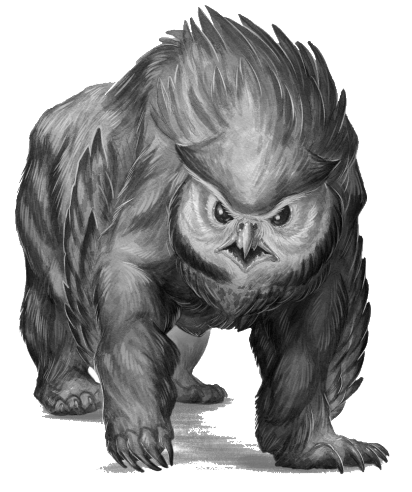

Scarlet Horizons
Owlbear

• No. Enc: 1
• Alignment: Neutral
• Movement: 30'
• Armor Class: 6
• Hit Dice: 5 (typically 31-33 HP)
• BAB +5
• Attacks: 2 (claw & beak)
• Damage: claws for 2d6, beak for 2d10
• Save: F4
• Morale: 10
• Hoard: 1d6 chroma, 1d4 royals, 1d4 copper (15% it's Red Cuprous)
Experience Yielded: 250 per owlbear defeated
Owlbears have one claws swipe attack and one beak attack; if the claw attack hits, the beak auto-hits. An owlbear isn't a natural creature by a long-ago result of wizardry gone awry. Owlbears regenerate 1 hit point per round, or one full HD per six rounds.